探索 SEEK
越过我们的无知。
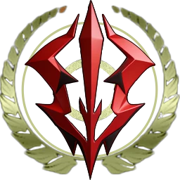
SET.设施+ SEEK. ESTABLISH. TRANSCEND.
从心灵到现实，
无不实现人之美好。
理解、认知宇宙时空的无限信息。
干涉、改变实体世界的无穷能力。
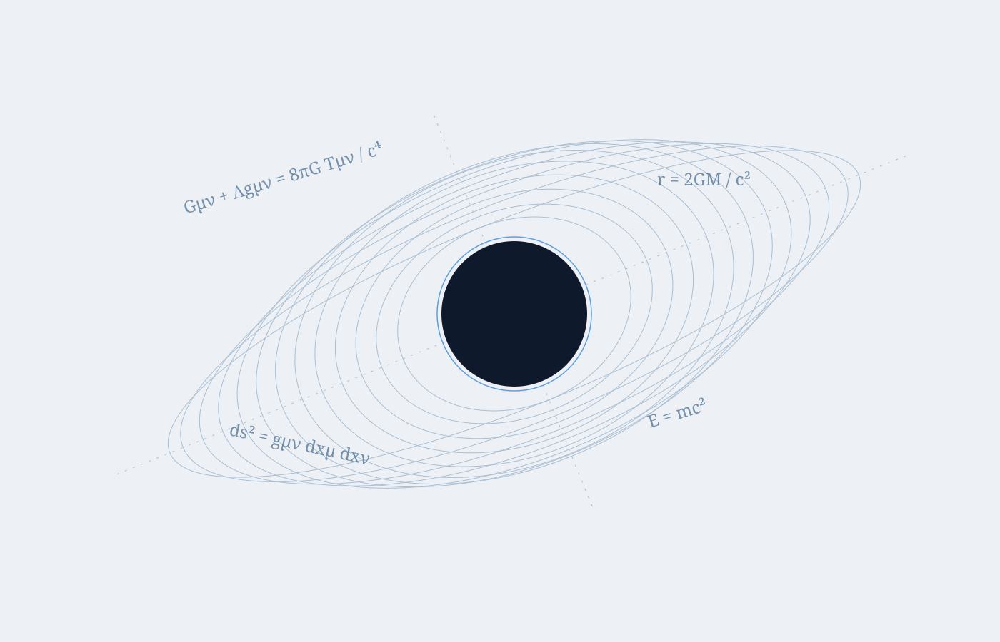
“我们正塑造的完美不是脆弱的永恒之美，
而是万有的可能与无限之美。”
越过我们的无知。
从心灵到现实。
直至超越黑暗。
人类的荒诞和庄重并不矛盾。
恰恰相反，这构成了人之生命力的根本。
叙事与叙事者皆从属于现实。
上如同下，下如同上。
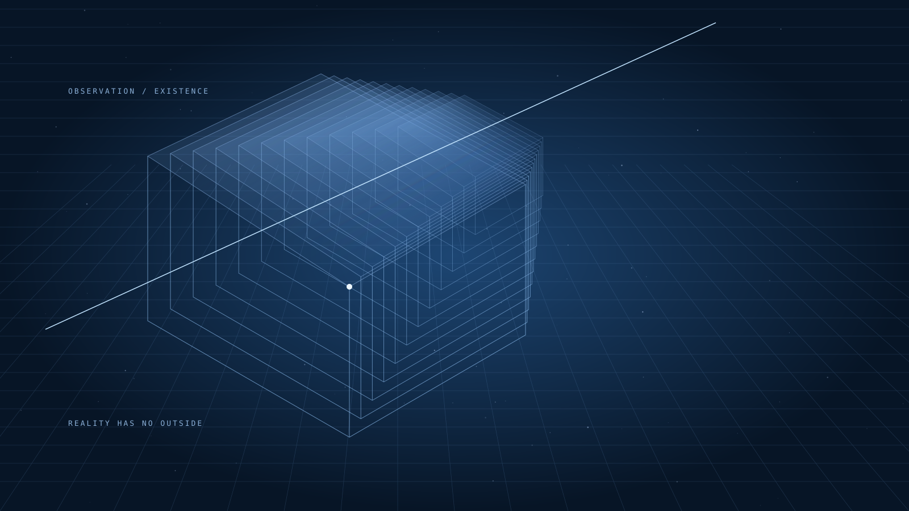
我们将、曾、正在定义现实。
叙事与叙事者皆从属于现实，上如同下下如同上的道理正是如此，吾汝之间二者无分。
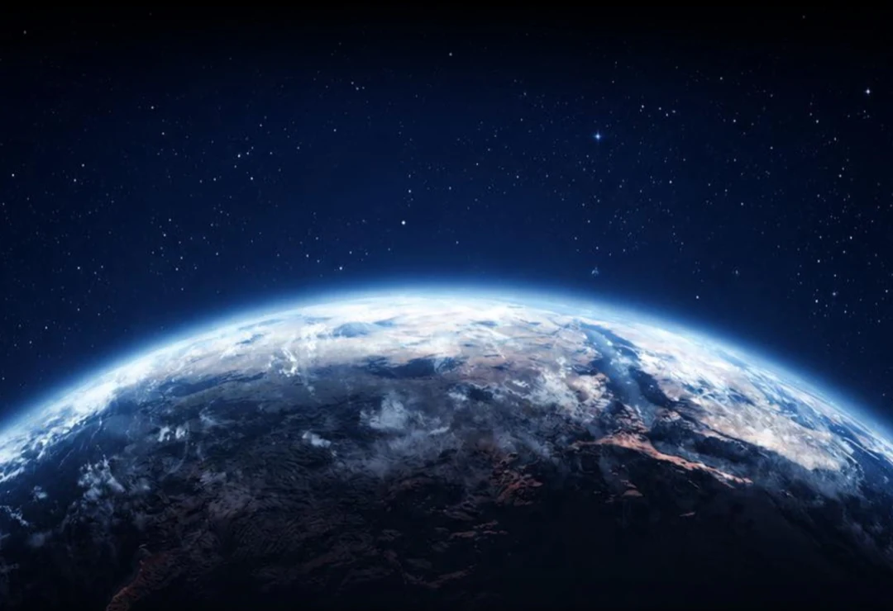
THE JOURNEY CONTINUES
我们的意志，我们的渴求，
会亿万次于尘埃中崛起。
SET / A FIELD OF CIVILIZATION
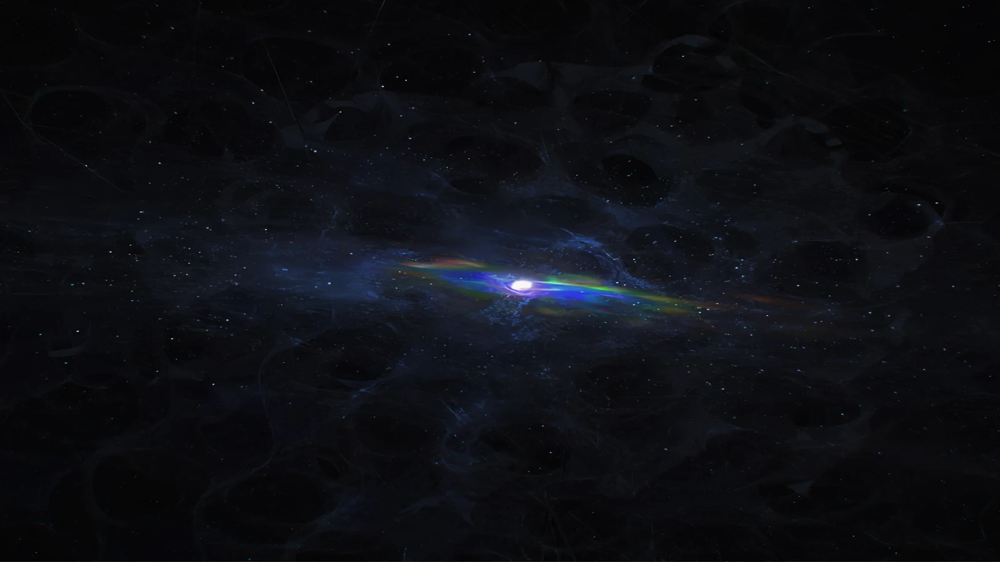
光辉从核心星体流动的表面喷薄而出，又不断坍缩。它驱动整片星域，以难以想象的方式持续变更绝对位置。
A HORIZON IN MOTION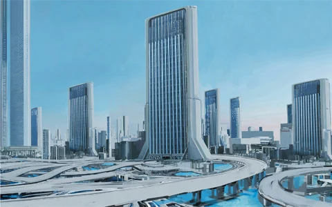
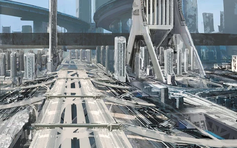
SURFACE / 地表城市又名蓝星，依照人类古老家园的形态建造。近千亿人口生活于此：约十分之一居于地表，另外九成居于占据地幔的巨大居住壳中。
ONE WORLD / MANY LAYERS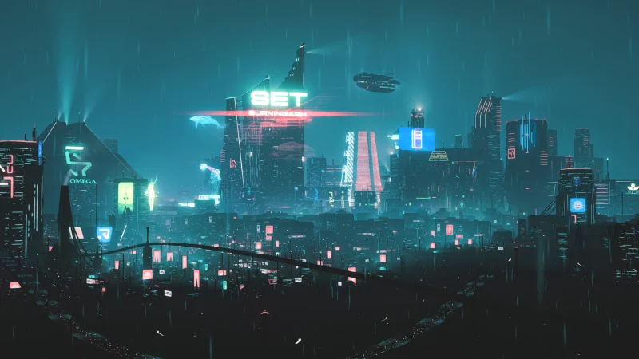
利用永恒视界的散逸能量构筑维度夹缝，通过集体潜意识海洋维持时空连续性。多层空间中，生态系统与居住行星沿非欧结构展开。
空间意象 / LAYERED WORLDS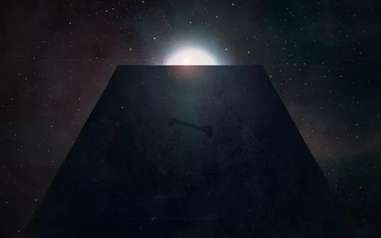
一座呈现 1 : 4 : 9 比例的黑色长方体，静静漂浮于虚空，伴随奇异的跳跃点风暴移动。
A PRESENCE IN THE VOID行星之外，
另一种尺度的建设。
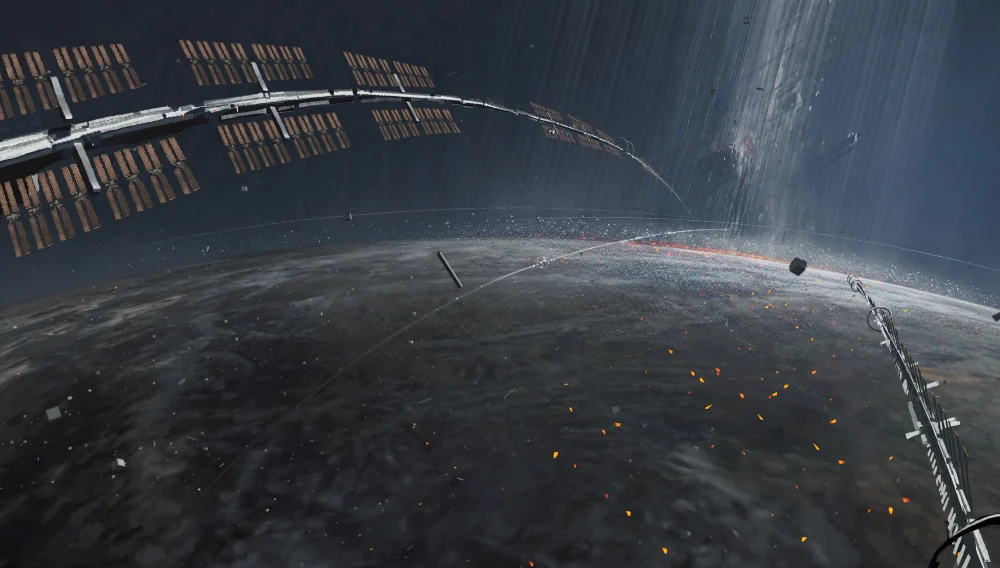
01 / ORBITAL STRUCTURE环绕行星的结构，将建设的尺度从地表延伸至轨道。
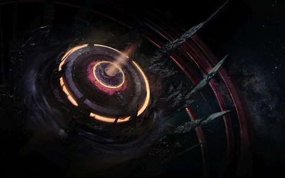
02 / ORBITAL SHIPYARD外贸轨道船坞矗立于永恒视界的跳跃点近旁。自动化生产线组装舰船，港口迎接穿梭星海的来客。
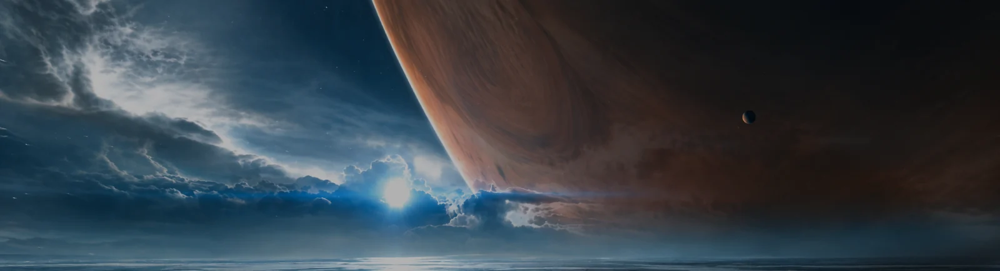
A SHARED ASPIRATION
共同打造一个理想社会。
我们正建立的乐土不是浮于表面的假面社会。我们要建立起的是一个从心灵到现实无不实现人之美好的理想社会。我们正塑造的完美不是脆弱的永恒之美，而是万有的可能与无限之美。我们正消除的不是狭隘的不和之恶，而是一切不公不正不向往美好之物。
SET · 设定摘录
REALITY & OBSERVATION
我们将、曾、正在定义现实。
完成了。关于一直以来对虚实边界的无尽的担忧和恐惧与喋喋不休的对叙事与观测逻辑的争执，将在过去和未来不复存在了，我们将、曾、正在定义现实。
叙事层理论是一个本体空悬——概念无限延伸——自我指涉的观念。带有严重的范畴错误，语言和叙事是先语言产生的系统，所谓的超形而上学错误地将认识论当做本体论使用了。
叙事与叙事者皆从属于现实，上如同下下如同上的道理正是如此，吾汝之间二者无分。
SET · 设定摘录
MATTER & CONSCIOUSNESS
物质、空间、意识与信息。
宇宙中所有的一切都是能量的显化，物质是凝固的低频能量，空间是升华的高频能量，意识是不稳定的变频能量，信息是能量的双向载体，因此一切物质、空间、意识和信息均能还原为本源的能量。
世间万物皆相通。意识和物质之间本来无分界，虚实便是波在不同频率下表现出来的波形。
SET · 设定摘录
BEYOND LINEAR TIME
观测反涉 · 数维科技 · 集体潜意识海洋
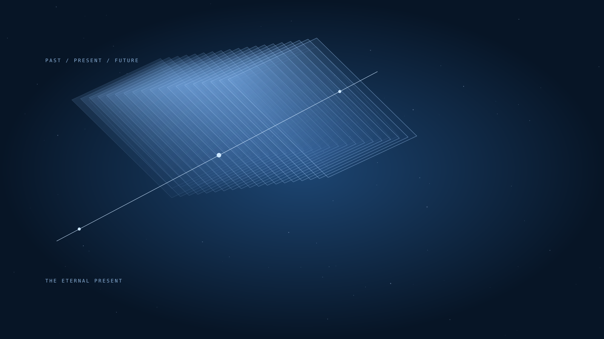
超越时间和空间界限的数学维度数据库建筑。一个边缘空间，现实的结构在这里交织于光谱平面。
过去、现在和未来的一切都在此处揭示。
对于 SET 设施来说，过去和未来是不存在的，唯有永恒的现在。观测反涉、数维科技与集体潜意识海洋的最终运用，在此交汇。
SET · 据设定节选整理
THE HUMAN SPIRIT
人类的灵魂自有其荒诞的一面，人类的荒诞和庄重并不矛盾，恰恰相反，这构成了人之生命力的根本。
设定笔记 · 思想摘录
AT THE END OF TIME
Fe — 56
在经历极其漫长的时间后，宇宙中所有的重子物质都会变成铁-56，一种紧密结合的铁的同位素。
在经历极其漫长的时间后，宇宙会进入黑洞纪，宇宙中只剩下无数的黑洞，而直到最后一个黑洞也蒸发，宇宙中将只剩下光子，变成光子的海洋。随着宇宙膨胀，光子也将向绝对零度冷却，最终一切归于沉寂。
设定笔记 · 宇宙终局片段
BEYOND THE KNOWN
我们的意志，我们的渴求，会亿万次于尘埃中崛起。攀登。攀登。不断地向上，越过我们的无知。直至超越黑暗。
SET · 设定摘录
叙事与叙事者皆从属于现实，上如同下下如同上的道理正是如此，吾汝之间二者无分。 物质是凝固的低频能量，空间是升华的高频能量，意识是不稳定的变频能量，信息是能量的双向载体。 超越时间和空间界限，现实的结构交织于光谱平面。观测反涉、数维科技与集体潜意识海洋的最终运用。